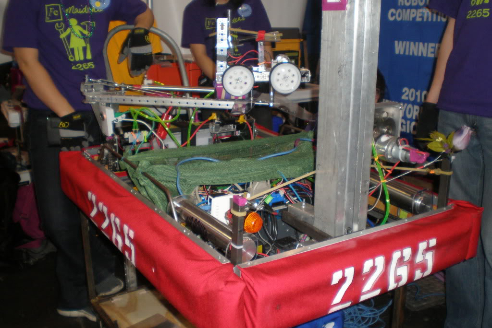
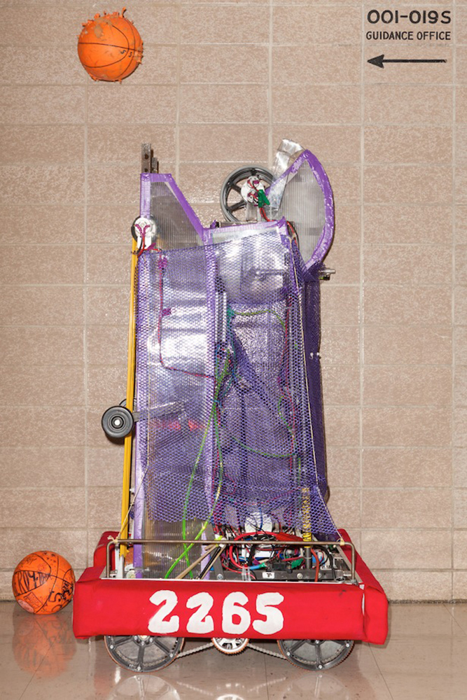

The Fe Maidens
Captain, Co-Captain, Head of Programming & Electronics
September 2008 - June 2012
I spent all four years of high school as a dedicated member of Bronx Science’s all-girls FIRST robotics team, 2265, The Fe Maidens. With my team, I built 4 award winning robots. I lead the team of 50 girls as Co-Captain and Head of Programming and Electronics as a junior, and as Captain as a senior.
2009 - "Lunacy"
As a freshman I worked mostly the physical construction of our robot, "Robert."
Our 2009 robot, collecting game pieces.
2010 - "Breakaway"
The programming and electronics team graduated the previous year, so as a sophomore I taught myself the basics of electronics and Java, and wired and programmed our robot on my own.
That year we won the NYC Regional Championship based on our robot's performance, and the NYC Engineering Inspiration award for our outreach work in K-12 engineering education.
Below is a picture of our 2010 robot, “Kelly the Beckam Gellerman.”
Our 2010 robot (red bumpers) defending the goal from an opposing alliance's robot
2011 - "Logomotion"
As a junior I held the positions of team co-captain and Head of Electronics and Programming. I worked on the programming, electronics, and pneumatics of the robot, in addition to making sure the team was working together as a whole. In 2011 we were NYC Regional Quarter-Finalists.
Below is a picture of our 2011 robot.
- 
2012 - "Rebound Rumble"
As a senior, I held the position of team captain. I worked on the programming, electronics, and pneumatics of the robot, in addition to making sure the team was working together as a whole. In 2012 our team placed as NYC Regional Semi-Finalists.
Below are some pictures of our 2012 robot, “Hooptimus Prime.”
- 
Our 2012 robot, taking practice shots in the hallway.

Our 2012 robot, on the left, balancing on a game obstacle for extra points with one of our alliance partners.